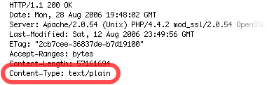

A File Download appears as garbled text
In some cases, an incompatibility can occur between your Host and particular file types. When clicking a link to a File Download, the file does not actually download, and instead a large quantity of garbled text appears in your web browser, like so:
This is caused by your Host marking the content type of the file as a "text/plain." In other words, the Host's settings tell your web browser that the file is not actually to be downloaded, but instead is a piece of text, and so the web browser displays it as such.
If a file download appears garbled, your first step is to determine whether or not this is the cause of the problem.
To verify the issue:
- Click the download link as if you were trying to download the file.
- Copy the URL of the file from the address bar of your web browser.
- Open the Terminal application (found in the "Applications → Utilities" folder).
- Type the command curl -I followed by the address of the File Download (from step 2). You should have a command like this:
curl -I http://www.example.com/myFile.mp4
-
Press the return key. Some output will appear roughly like this:

If, as in the image above, the "Content-type" is "text/plain," this is the problem. You have three possible choices for rectifying the issue:
- Contact your Host and request that they update their settings to properly accommodate files of that type.
- Compress the file into a ZIP archive and then upload it. Almost all Hosts correctly support ZIP archives.
- Request that your site visitors right-click (or control-click) the link and choose to download the file, rather than clicking on the link.